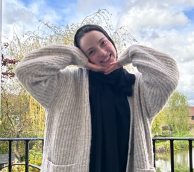

Aiyah Fituri

Summary
I am a dedicated and hardworking professional with a diverse background in customer service, administration, and childcare. With a passion for delivering exceptional service, I have honed my communication and problem-solving skills through years of experience in various customer-facing roles. My interpersonal skills allow me to build strong relationships with clients, and to nurture a more exciting and comfortable work environment. Additionally, my administrative expertise enables me to effectively manage tasks, streamline processes, and maintain meticulous records. I am now seeking an opportunity where I can leverage my skills and experiences to contribute to a dynamic team and make a positive impact.
Education
- Lockerby Composite High school, (2012-2016)
Work Experience
-
Starbucks
Barista/Barista Trainer
April 2016– Present
- Provided customer service
- Train and motivate new team members
- Connecting with customers to create a welcoming and accepting environment
- Acquired effective multi-tasking and time management skills
- Food safety and hygiene
- Maintained up-to-date knowledge of ingredients and allergens and offered suggestions to diners following specific medical, cultural, or socially conscious diets
- Task prioritization
- Team collaboration
- Promotional upselling
-
Nanny
2015-2016, 2019-2020, 2022-2023
- Worked as a live-in Nanny for three families
- Cared for children of all ages
- Promoted good behavior, scheduled activities, maintained routines
- Cleaned houses and prepared meals
-
RBC
Client Advisor/ Receptionist
February 2020 – December 2022
- Provided customer service and built relationships with clients
- Responsible for several administrative duties, such as booking appointments, making 40-50 calls a day to clients regarding investments and renewals, and opening and closing accounts
- Cash handling
-
For Seniors only
Overnight Caregiver
January 2018 – December 2019
- Cared for clients with physical disabilities
- Transferred to bed, provided food, cleaned feeding tubes
- Played educational activities and provided companionship
-
Goodlife Fitness
Motivator/ Daycare/ Cashier/ Volunteer
October 2014 – February 2017
- Provided customer service and tours of facilities
- Signed people up for memberships
- Called prospective clients for memberships
- Sold merchandise
- Supervised children aged 12 weeks-13 years old
- Cleaned pool area and weightlifting area
Skills
- Emotional Intelligence
- Flexibility
- Teamwork
- Communication Skills
- Administrative
Other